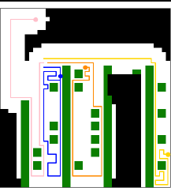

I'm a robotics engineer and technical leader in Austin, TX. As Team Lead, Application Engineering at Apptronik, I own the technical path of humanoid deployments — from understanding the customer's problem to a validated system doing productive work on their floor, for customers like Mercedes-Benz, GXO and John Deere.
Before that I co-architected the Fleet Management System at Agility Robotics and completed an M.S. in Robotics at Oregon State University with a thesis on decentralized multi-robot exploration through deep imitation learning.
Research interest: physical AI safety for humanoids — learned models that predict the consequences of whole-body actions and support safe long-horizon planning.
B.Sc. Economics & Finance, London School of Economics.
2016–20
Nuremberg, Germany
M.S. International Economics and Finance, TH Nürnberg. Co-founded Whammychat — $200k pre-seed.
2020–24
Oregon, USA
M.S. Robotics at OSU; fleet software for Digit at Agility Robotics.
2024–now
Austin, USA
Humanoid deployments at Apptronik for Fortune 500 customers.
02 Technical contributions

FIG. 1 — MULTI-ROBOT EXPLORATION
Decentralized Multi-Robot Exploration with Sparse Communication through Deep Imitation Learning
M.S. Thesis · Oregon State University, 2022 · Advisor: Geoffrey A. Hollinger
An AlphaGo-inspired imitation-learning approach that keeps robot teams coordinating when communication is sparse or drops out, trained at scale on a purpose-built 2D underwater multi-robot simulator.
Path planning for an autonomous underwater vehicle
Graduate Research Assistant · OSU, with UW Applied Physics Lab & NAVFAC, 2021–22
Local and global path planning for subsea turbine inspection: RRT-Connect via OMPL, optimized viewpoint generation and planner visualizations — developed in simulation, validated on hardware.
Lead Solution Architect / Team Lead · Apptronik, 2024–now
Owning the technical path from customer problem to validated deployment of Apollo — planning, integration and on-site technical validation for Mercedes-Benz, GXO and John Deere, leading a team of 4 (soon 6) engineers. Safety-concept co-lead; TÜV Rheinland Functional Safety Engineer.
Co-architected the Fleet Management System coordinating Digit fleets in live Amazon and Toyota warehouses — tasking, data collection and analysis, customer-system integration. Led the customer-PLC-to-FMS integration and built the company's first PLC-based workcell safety system.